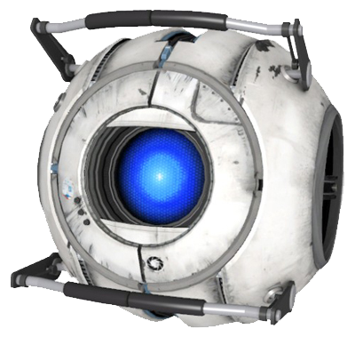

|  |
Intelligence Dampening Sphere
Wheatley, previously known as the Intelligence Dampening Sphere, is a personality core of masculine programming and English West Country accent who appears in the single-player campaign of Portal 2.
He serves as the game's deuteragonist, guiding Chell through her efforts in escaping the Aperture Science Enrichment Center. However, half-way through the game he and GLaDOS switch roles as she becomes Chell's deuteragonist and Wheatley becomes the game's main antagonist.
Wheatley is voiced by British actor and comedian Stephen Merchant.
|